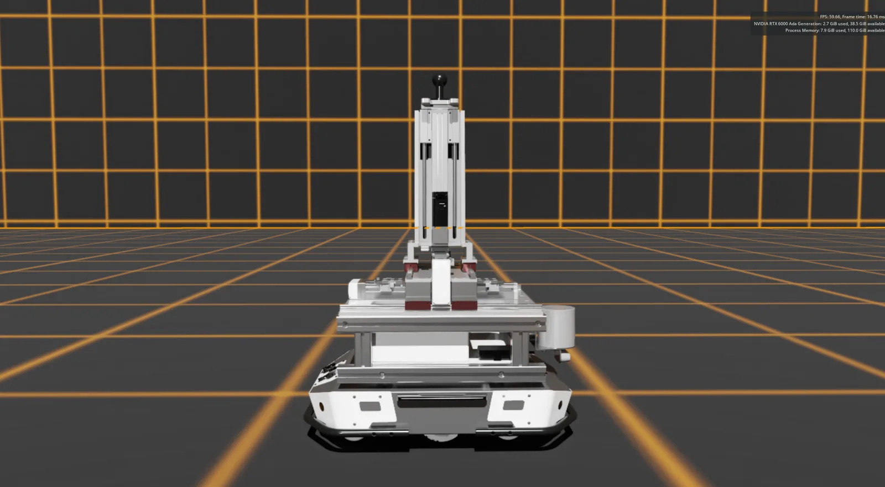
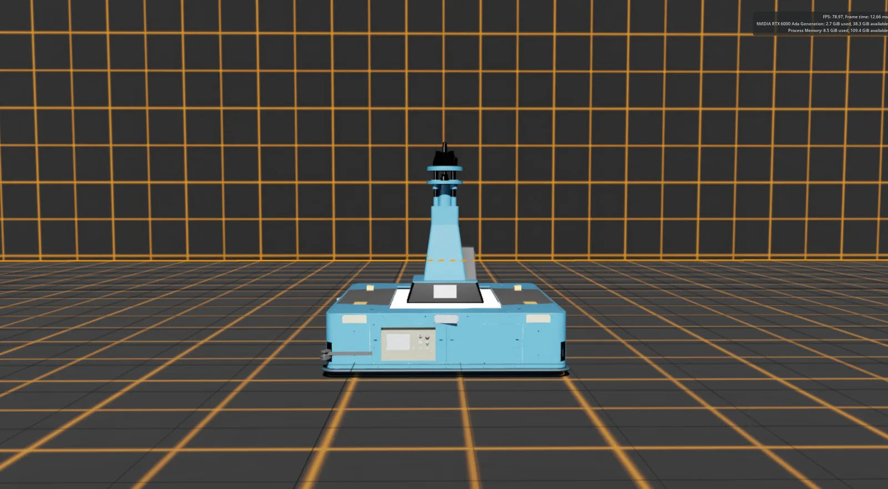
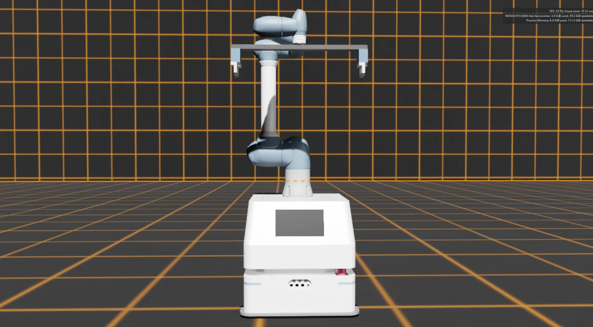
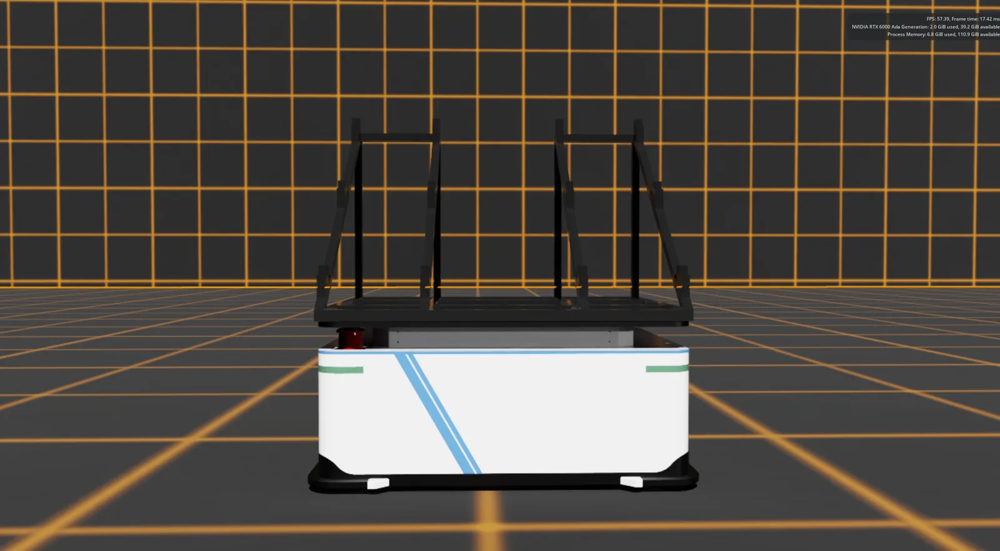
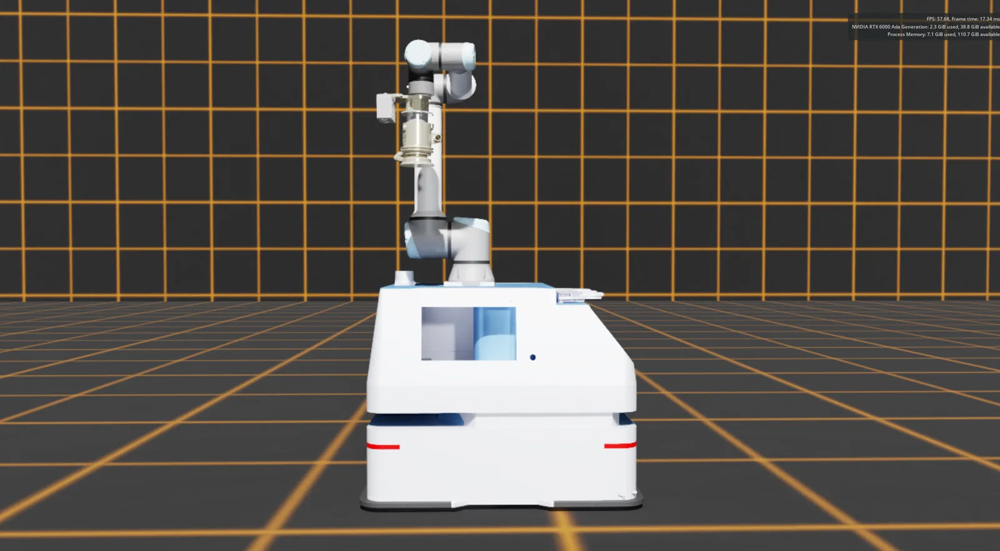
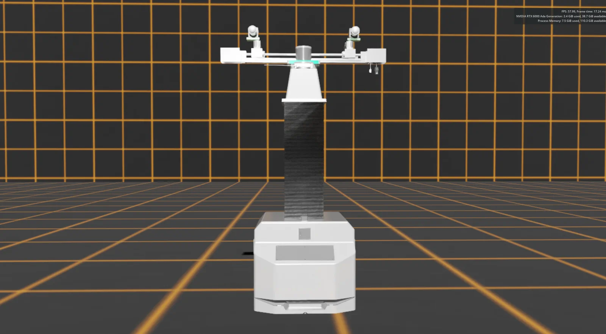

01.1
OPENUSD / ASSET PIPELINE
USD 元模型构建
从 CAD、坐标系、运动学链和材质纹理出发，经 URDF 与 USD 组织，组合执行器、机械臂、AGV、工装及场景元模型。
CADURDFOpenUSDIsaac Sim
数字孪生 集群机器人 · 智能操作
从 OpenUSD 元模型与动力学建模出发，将多类机器人、产业现场和智能策略组织为可复用、可验证、可扩展的系统成果。


01 / ROBOT DIGITAL TWIN MODELING
以可复用元模型为基础，将几何、语义、关节与动力学参数统一组织，形成面向多场景批量实例化的机器人资产库。
OPENUSD / ASSET PIPELINE
从 CAD、坐标系、运动学链和材质纹理出发，经 URDF 与 USD 组织，组合执行器、机械臂、AGV、工装及场景元模型。

DYNAMICS / IDENTIFICATION
由真实设备运行数据辨识动力学参数，并将机器人 USD 模型、物理引擎、求解器与高性能计算资源连接到统一孪生世界。
覆盖移载、顶升、抓取、加工与感知等典型任务，可按项目需求组合为异构集群。





02 / INDUSTRIAL COLLABORATION
这里将现场设备、孪生模型、分布式通信和业务流程合并展示，不再将“虚实联动”拆分为独立章节。
中国商飞合作
围绕飞机筒段装配实验产线，构建机器人与机构孪生模型，覆盖协同移载、精准对接、感知测量与加工复位等装配环节。

在统一场景中还原产线布局、设备关系与装配过程。
依据位姿关系完成筒段轴线与接口的精确对准。
感知设备参与装配状态与几何关系测量。
完成加工动作后执行设备复位与流程闭环。
多台移载设备协同完成筒段位置调整与工位转移。


移动合作
面向异构机器人集群，构建 ROS2 分布式数据传输与管理平台，连接多源传感器、设备状态、仿真指令和 Omniverse 场景。


03 / RL MANIPULATION
该章节预留给后续 RL Manipulation 项目。成果加入后，将沿用“任务—训练—评估—验证”的统一展示结构。